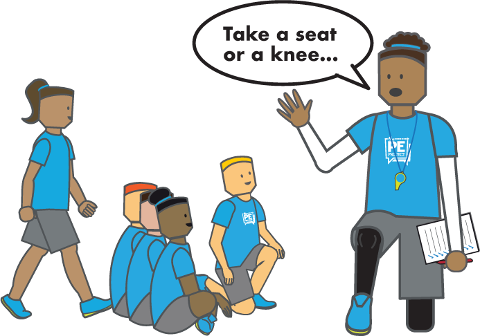
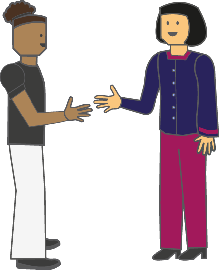
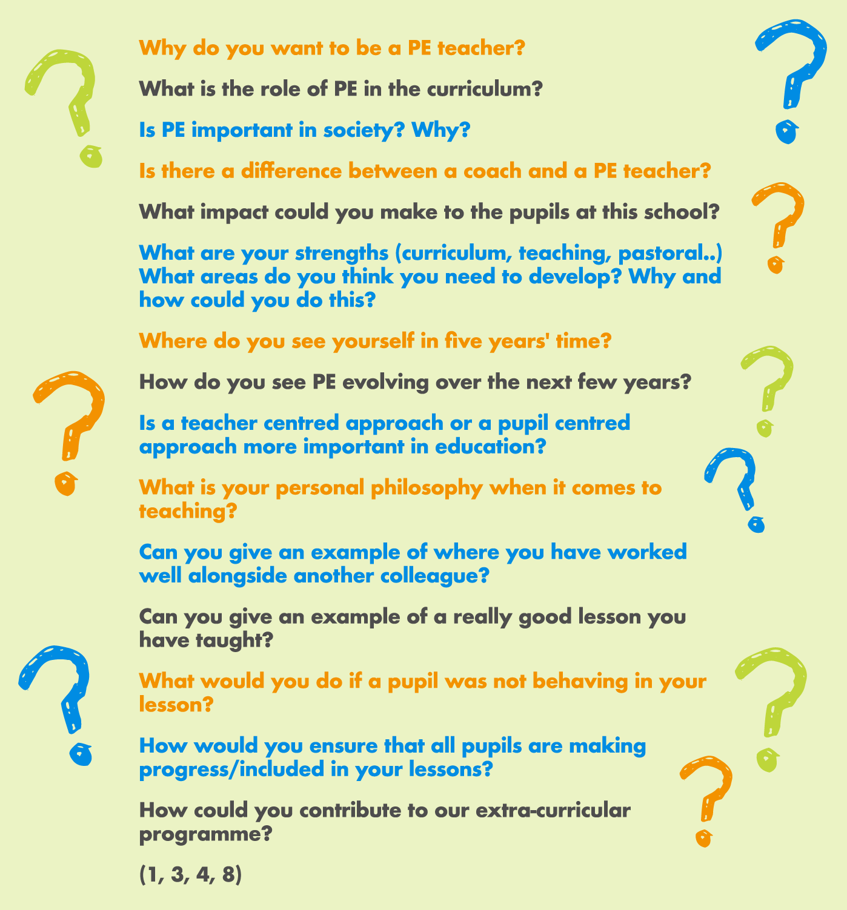
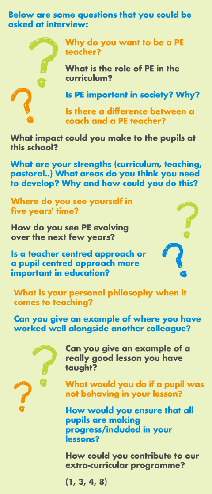

If you have been shortlisted and invited to interview, then you have done very well. It is likely that a number of people applied for this position, so the school has seen something in your application that they are interested to know more about. If you did not make it to the interview process, then it is time to reflect on what you included in your application form and what you could have done to make a stronger claim to gaining an interview. A phone call to the school asking for feedback is a great way of improving on your applications; however, feedback is not always available at the application stage, especially if the school has had a large number of applicants [1, 4].
The interview process can be different from one employer to the next. Arrive to the school in your formal interview attire, being smart in appearance, and punctual. Have your practical PE kit with you in a bag. It is also important to learn and use names straight away once you arrive.
- Taught lesson
- Interview Task
- Formal Interview
Other processes could include a tour of the school and facilities, informal discussions with the department and a pupil panel [4].

In the majority of cases, you will have had time to prepare this and request equipment (or ask what equipment is being given to you). When looking at the teaching activity, look in detail as to what they are asking you to do and reflect on what you have done before that you may be able to replicate. Delivering a lesson on interview that you have previously done helps with your confidence on the day. Don’t be afraid to contact the school and ask about any equipment, facilities, numbers of pupils etc. The less “blind” you go into this lesson, the better [1, 3].
What you won’t necessarily be clear about is the ability of the group or the names of the pupils. You need to work this out quickly and aim to be flexible in your approach so that you can adapt what you have planned if it is clearly too easy or too hard. The observing staff will be aware that you do not know the pupils, so will expect this. Therefore, it is important that you consider ways you could adapt your plan if you need to. It is also worth noting that if the interview lesson is planned for outside and on the day of the interview, a factor, such as the weather doesn’t allow you to deliver the lesson in that facility, then consider ways you could adapt your plan for indoors.
Does your lesson exemplify what the school are looking for? Reflect on your pedagogical approach in that lesson – will it work? If the school is particularly proud about producing independent and responsible pupils, then a command approach [7] may not be the best approach in that circumstance.
These could include:
- a marking/grading activity
- a data analysis activity
- a poster presentation on a theme
- a mock department meeting, where you need to lead on a new strategy
- a pupil voice meeting or pupil interview
- a written essay about a theme
Some employers will inform you of what you will be doing, whilst some may not. Whatever you do on the day, try to consider all that you have learned about the school, what they are looking for, what your experiences are and do your best.
The formal interview or face-to-face interview is often conducted by a panel consisting of the Head of Department, Headteacher and a governor. At this stage you will be asked questions regarding your knowledge and understanding about education/PE and seek more information from what you have said in your application. Ensure you are up-to-date with developments in education, learning, teaching, PE. It is important to remember what you wrote on your personal statement, as there is every chance that they may ask for you to expand on parts.

This is generally the time that is the most stressful for a candidate, but schools normally try their best to put you at ease at this stage. Whilst it is often stated as the formal interview, schools will often try to be as informal as they can be. As you are in the interview, the school is very much interested in having you, so sit up, smile and be positive [1].
Not knowing what they will ask is the most daunting prospect of an interview. Aim to consider what has been asked, pause to gather your thoughts and then respond as professionally as you can. Blurting out the first thing that comes to mind may not be the best idea! Remember that they want to know about you and what you can offer the school.
Below are some questions that you could be asked at interview:


There is a strong possibility they will also ask you about your performance in the other interview stages, such as the taught lesson or the ‘other’ activity. Therefore, aim to be able to justify your actions and be honest.
Practising interview questions with somebody prior to the interview can help put you at ease before the real thing.
Applying for a job should be seen as two-way process. You are seeking employment there, but you must be happy with their terms and conditions, what is expected of you and what support you could receive. They are looking to employ the person that best fits the job description and their school. Aim to have two or three questions you could ask them at the end of the interview. These could be based around NQT support, professional development opportunities, or as simple as clarifying start dates [4]. A great question to wrap up your interview is "What is your favourite thing about working at this school?" This will help you finish the interview on a positive note, leaving your interviewers feeling good about themseleves and you as an applicant

With 2020 and the global pandemic causing interviews to move online, the interview process is slightly different.
Some key tips towards preparing for this version of interview are:
- that the school will be contacting you with and practice using it. This includes checking your internet connectivity, audio and video connections.
- is that you can have notes available that they will not know about. How you do this is up to personal preference, so whether you have pieces of paper or a whiteboard, make notes on the job description and things that you are good at it in relation to this. You could also have research or evidence to hand that you could refer to.
- This includes your appearance, but also the appearance behind you. Check what is in your background and inform anybody else in your household to be quiet and not walk in mid-interview.
Whether you were successful or not, gaining feedback can help you grow as a teacher. If you were not successful, arrange a time to contact the person leading the interview to discuss your performance. i.e., What could be improved for future interviews? Make notes and reflect upon this for future applications [1]. Try to avoid seeing any closed doors as a set back, rather view them as a set up for the right job for you. If you find yourself without a teaching position at the start of the year then consider doing some substitute teaching a few days a week and/or volunteering your time as a PE teaching assistant at a local school. Your commitment will stand out when you apply for future positions.
References
- Burton, D. (2018) Teach Now! Physical Education: Becoming a Great PE Teacher. London: Routledge.
- The Department for Education (DfE) (2018) Induction for newly qualified teachers (England). Revised April 2018. Available HERE
- Stidder, G. (2015) Becoming a Physical Education Teacher. Oxon: Routledge.
- Golder, G. & Stevens, J. (2015) ‘Beyond your teacher education’ in Capel, S. & Whitehead, M. (eds.) Learning to Teach Physical Education in the Secondary School : A Companion to School Experience, Oxon: Routledge, pp. 271-287.
- Willis, J. & Todorov, A. (2006) First Impressions: Making up Your Mind after a 100-Ms Exposure to a Face Volume. Psychological Science, 17:7, 592-598.
- McGrath, J. & Coles, A. (2016) Your Teacher Training Companion: Essential Skills and Knowledge for Very Busy Trainees. Second Edition. Oxon: Routledge.
- Mosston, M. & Ashworth, S. (2002) Teaching Physical Education (5th edition). London: Pearson Education.
- Waide, L. (2009) So You Want to Be a Teacher? How to Launch Your Teaching Career. London: Continuum.